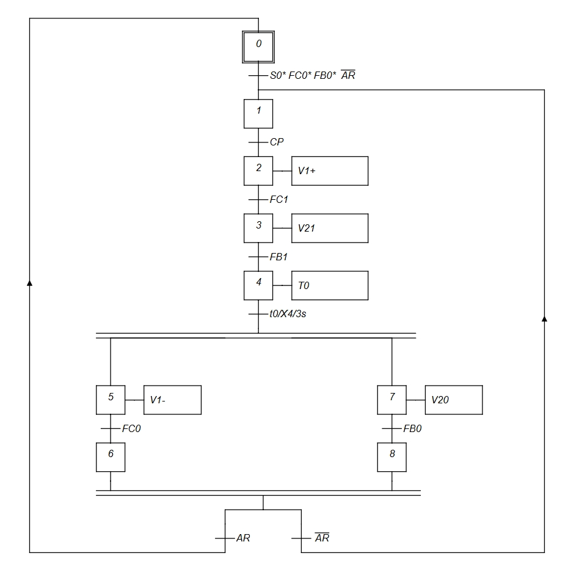
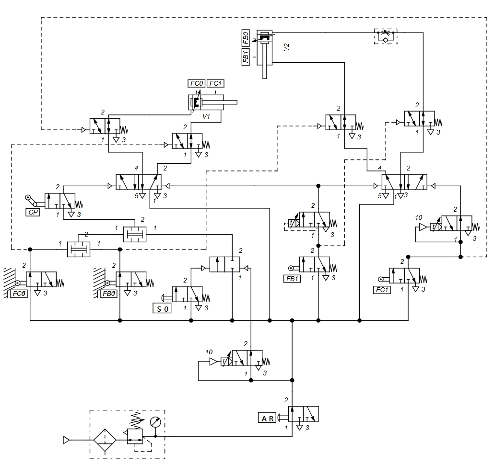

Simulation Gallery

Electro-pneumatic automated drilling station designed using FluidSIM and GRAFCET with relay logic control.
This project simulates an automated drilling station used in industrial production. The control sequence was developed using GRAFCET and implemented using electro-pneumatic relay logic in FluidSIM. The system automatically clamps the workpiece, performs the drilling operation, waits for a predefined drilling time, and safely returns to its initial state.
Manual drilling operations in manufacturing environments are repetitive, time-consuming and may lead to positioning errors. An automated electro-pneumatic drilling station increases productivity, improves repeatability and enhances operator safety by executing the complete drilling cycle automatically.
Automate the complete drilling cycle.
Clamp the workpiece before drilling.
Guarantee a repeatable operating sequence.
Verify the system using FluidSIM simulation.
FluidSIM
Relay Logic
GRAFCET
2 Double-Acting Pneumatic Cylinders
Limit Switches
✅ Completed
Two pneumatic cylinders for clamping and drilling movements.
Used to control the extension and retraction of each cylinder.
Position feedback for each stage of the sequence.
Controls the complete operating sequence.
Maintains the drilling operation for 3 seconds.
Represents the drilling spindle during the machining process.
The GRAFCET defines the sequential logic of the automated drilling station, ensuring a safe and repeatable operating cycle.

Electro-pneumatic circuit developed in FluidSIM to control the automated drilling sequence.

The complete drilling cycle was executed automatically.
The operating sequence followed the GRAFCET without conflicts.
The system was successfully tested and validated in FluidSIM.
The workpiece was always clamped before drilling began.
During testing, Cylinder B restarted unexpectedly after returning to its initial position.
The control sequence was revised to eliminate the repeated trigger, ensuring that each movement is executed only once per cycle.